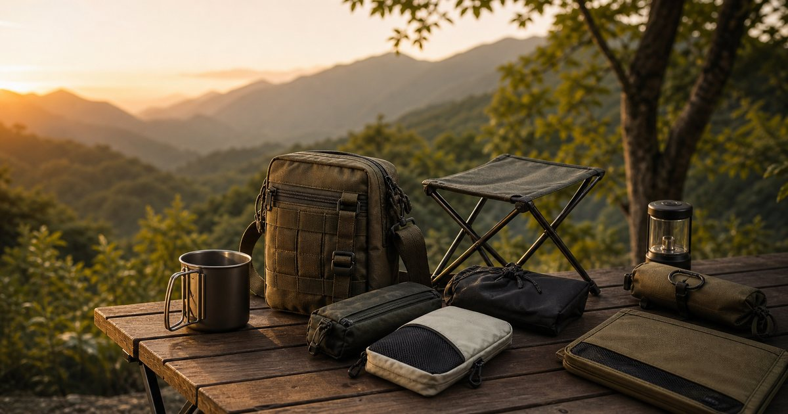

Elite Fashion｜想露飛飛 campingflying 深度推薦：從戰術斜背包到營地小物的一袋式秩序
想露飛飛適合放在城市週末、輕露營與短途移動之間：用戰術斜背包、鈦杯、椅凳與收納小物，把戶外準備整理成真正會帶出門的一袋式配置。

有些戶外用品不是為了把生活變得更野，而是讓城市與自然之間的移動少一點混亂。想露飛飛 campingflying 值得被放大看的地方，在於它不像完整露營系統那樣要求一次到位，而是更接近一組可以慢慢加進生活的小型秩序：一只斜背包、一個杯子、一張椅凳、幾個收納袋，讓週末出門不必重新整理整個家。
想露飛飛適合的不是裝備牆，而是常出門的人
很多露營店看起來很迷人，卻容易把新手推向大型帳篷、整套桌椅和一整面裝備牆。想露飛飛比較適合另一種讀者：平日通勤，週末可能去河岸、山邊、營地或朋友家的陽台；想要東西好拿、好收、外型有一點戶外感，但不希望每次出門都像搬家。
這也是本文選擇它作為第一篇單店推薦的原因。它不是用來取代所有戶外品牌，而是適合補在「每天可能會用、週末真的會帶」的位置。戰術斜背包、鈦杯、椅凳、收納配件這幾類商品，本質上都在回答同一個問題：你要如何讓小物有固定位置，而不是每次出門前都重新翻找。
編輯部的判斷是，想露飛飛最值得看的不是單一爆款，而是它能不能幫你建立一個輕量、可重複、可帶回城市生活的戶外小系統。這個角度和一般露營清單不同，重點不是買滿，而是讓一袋東西能服務一整天。
- 適合短途戶外、露營新手、城市週末移動與喜歡軍風收納的人。
- 不適合一開始就想買大型帳篷、完整廚房系統或專業高山裝備的人。
第一個入口：戰術斜背包先看容量與分層
戰術斜背包最容易讓人只看外型：織帶、扣具、硬挺輪廓、深色布料，看起來很能裝，也很有戶外感。但真正決定使用率的，是分層是否清楚。手機、鑰匙、行動電源、濕紙巾、耳塞、小手電筒和杯具如果全部堆在同一格，包再好看都會變成黑洞。
想露飛飛這類店適合先從 EDC 小包邏輯來看。所謂好用，不是容量越大越好，而是你能不能在不坐下、不倒出全部東西的情況下，找到最常用的三樣物品。對台灣讀者來說，機車置物、捷運移動、咖啡店工作和週末短途都會碰到同一件事：包要能放下必需品，也不能大到妨礙行走。
下單前建議先把你一天會帶的物品攤在桌上，分成「每小時會拿」「半天拿一次」「只是備用」三類。戰術斜背包應該優先服務第一類和第二類，備用品則放進內袋或小收納包，不要讓它們佔據最順手的位置。
- 先看肩帶寬度、開口方向、內部分隔與背在身上的厚度。
- 避免只因為外型硬挺就購買，日常包最怕拿取動作太慢。
Elite 嚴選
第二個入口：鈦杯與杯具要回到使用頻率
鈦杯有一種很容易讓人心動的輕量感，但杯具不是越多越好。真正該問的是：你會在什麼場景使用它？如果只是偶爾露營，一只容量合適、能放進包裡、不怕碰撞、容易清洗的杯子，比一整組杯具更實際。
想露飛飛的杯具與小物，可以被放在「辦公室到戶外」的延伸位置。它可能不只在營地使用，也可能出現在車上、陽台、河邊野餐或週末咖啡時間。這類杯具要看杯口手感、容量、握把折疊後是否卡包、是否容易殘留氣味，以及和你常用水壺或爐具是否互相干擾。
常見錯誤是先買一個很有戶外感的杯子，卻沒有替它安排收納位置。杯具如果沒有固定袋、固定格或固定清潔動作，很快就會變成放在架上的裝飾。先決定它要住在哪裡，再決定買哪一款，會比先看照片可靠。
- 一只常用杯，比三只偶爾拍照的杯更值得。
- 杯具要和包內分層、餐具、濕紙巾與清潔方式一起看。
第三個入口：椅凳不是越舒服越好，而是要願意帶出門
戶外椅凳的陷阱，是在家試坐很舒服，真正出門卻嫌重、嫌大、嫌難收。想露飛飛若要放進輕露營與短途移動情境，椅凳就不能只看坐感，還要看收納長度、重量、展開速度，以及是否能和你的包、車廂或行李箱搭配。
對台灣的週末生活來說，一張椅凳常常橫跨很多場景：公園、河岸、營位、戶外市集、等待小孩下課、拍照時臨時放包。它不一定要像長時間露營椅那樣包覆，但要夠穩、夠快、夠好收。若你通常只停留一兩個小時，椅凳的攜帶意願會比極致舒適更重要。
選購時可以做一個很簡單的取捨：如果它讓你每次出門前多猶豫三秒，它就太麻煩；如果你會自然把它放進車上或門口，那才是能長期留下來的戶外用品。
- 短時間戶外移動先看重量與展開速度，長時間露營再看支撐與包覆。
- 不要讓椅凳佔掉最順手的收納位置。
第四個入口：收納小物決定你會不會再出門一次
很多人以為露營疲憊來自戶外，其實疲憊常常來自回家後的整理。杯子沒有洗、袋子沒有晾、線材不知道放哪裡、濕紙巾和垃圾袋混在一起，下一次出門前就得重新面對一團混亂。想露飛飛的收納配件，應該被放在「降低下一次出門阻力」的位置。
可以把小物分成三包：隨手包、餐飲包、收尾包。隨手包放鑰匙、耳塞、小燈、行動電源；餐飲包放杯具、餐具、紙巾；收尾包放垃圾袋、濕紙巾、夾鏈袋、擦拭布。這樣做的好處，是每次出門只需要檢查包是否完整，而不是重新思考所有物品。
編輯部會把收納小物排在很前面，甚至比部分裝飾性單品更前面。因為收納一旦順手，戶外活動就會變得更輕；收納如果失敗，買再多漂亮用品也只是增加負擔。
- 每個收納袋都要有任務，不要只因為好看而增加一個袋子。
- 回家後能不能快速復位，是判斷收納是否成功的標準。
一袋式配置：先放高頻物，再放有風格的物
如果只想從想露飛飛開始建立第一組配置，可以用一個斜背包當核心：最外層放手機、鑰匙和耳塞；中間放鈦杯、擦拭布、短線、行動電源；內袋放小燈、垃圾袋、夾鏈袋；椅凳則視交通方式放車上、行李旁或門口固定位置。這樣的組合沒有誇張場面，但很容易被反覆使用。
真正的順序是先放高頻物，再放有風格的物。軍風織帶、金屬杯、深色收納袋都能創造畫面，但如果高頻物沒有位置，畫面很快會被混亂打回原形。這也是這家店最適合的切入點：它可以讓一袋東西有戶外感，同時仍然服務日常。
下單前請回到商品頁確認尺寸、材質、重量、配送、活動與庫存。本文只整理選購順序，不替任何商品做實測或成效保證。若商品頁資訊不足，先收藏觀察，比急著補滿更成熟。
- 先完成一袋式配置，再考慮第二袋或大型裝備。
- 風格可以慢慢堆疊，但高頻物的位置要一開始就清楚。
想露飛飛最適合誰？也要知道誰可以先暫緩
想露飛飛適合喜歡戶外感、重視收納、常在城市與郊外之間移動的人。它也適合正在試探露營的人：還沒有要買完整帳篷系統，但希望先把杯具、袋具、椅凳和小物整理起來。對這類讀者而言，它是一個低壓力的入口。
但如果你正在準備長天數登山、極端天候露營、專業炊事或多人家庭大營位，這篇的順序就不應該當成完整裝備建議。那時候要先回到安全、天候、場地規範與專業裝備條件，不能只用風格和便利性決定。
最好的用法，是把它當作週末移動的小型工具箱。當你知道自己出門會帶什麼、東西要放哪裡、回來如何復位，想露飛飛這類店才會真正變成生活效率的一部分，而不是另一批等待整理的物品。
- 適合小包、杯具、椅凳與收納小物的第一輪整理。
- 專業戶外、安全裝備與長天數行程仍需回到完整規格與場地條件。
同主題品牌參考
FAQ
想露飛飛 campingflying 適合露營新手嗎？
適合想先從小物、包袋、杯具與收納開始的人。若你還不確定自己會不會長期露營，先建立一袋式配置，比直接買大型裝備更容易看出真實使用頻率。
戰術斜背包可以當日常通勤包嗎？
可以，但要先看容量、分層、肩帶舒適度與厚度。若每天需要放筆電或大量文件，戰術斜背小包可能不夠；若只是手機、鑰匙、行動電源、耳塞與小物，它會比較合適。
鈦杯、椅凳與收納袋要一次買齊嗎？
不建議。先從最常發生的場景開始，例如週末短途、河岸野餐或營地咖啡，再補一到兩件能改善流程的物品。使用一次後再決定下一輪，通常會買得更準。
下一步建議
如果你想從一個小包開始整理週末戶外生活，可以先看想露飛飛的斜背包、杯具、椅凳與收納小物，再依自己的使用頻率慢慢補齊。
重要警語
本文為一般戶外用品與生活情境選購整理，不構成專業露營、登山安全或產品測試建議。商品尺寸、材質、重量、價格、活動、庫存與配送請以 momo 商品頁或店家頁公告為準。
本文含品牌／商品導購連結；若你透過部分商品連結前往選購，Elite Fashion 可能取得合作收益。本文仍以編輯判斷與使用情境整理為主，價格、規格、活動與庫存請以商品頁公告為準。